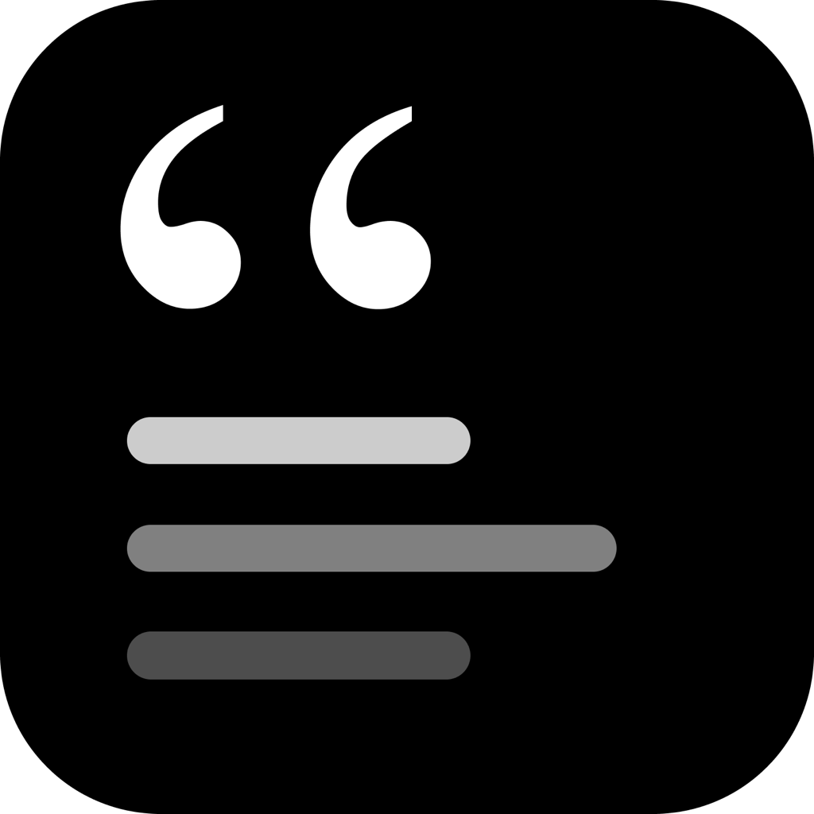

Quick Cards
A tiny macOS menu bar app for quick notes, card lists, and done marks.
1Open the downloaded DMG.
2Drag Quick Cards into Applications.
3Open Quick Cards from Applications.

A tiny macOS menu bar app for quick notes, card lists, and done marks.